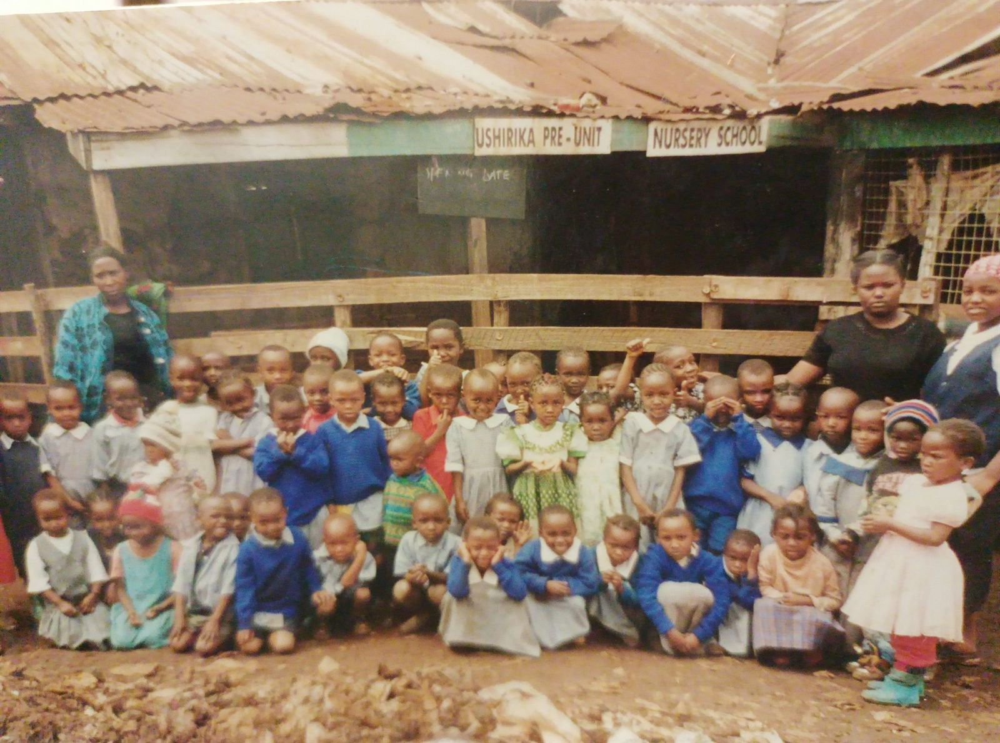

Our humble beginning
One early morning, on his way to work, our director and founder Mr. David Kitavi met nine-year-old Mwajuma. She was crying hysterically: dirty, hungry and desperate.
He asked her what was wrong, but she kept crying. Later David learned that she had been chased away, beaten and abused by the man she called dad.
David decided to take her in and look after her. He later took her to a grandmother in Kibera who was already caring for four orphans aged between 5 and 15. Then he gathered a few resources from his friends and rented a room where poor children could have a safe place to play and learn.
He left his job to run the children's centre full time. Ushirika had only four children, and many people could not understand why he would resign to spend his days with “dirty and hopeless children”, as people called them.
Every child we found was living in terrible conditions. Most came from single-parent homes, crowded into a one-room shack made of sticks and pieces of iron sheet. That one room was their sitting room, kitchen and bedroom.
Our director rented two rooms. During heavy rains, wind blew through the holes in the mud walls and water poured through the poorly roofed “school”. In those conditions the children often suffered from respiratory illnesses and parasitic infections. Worse still, poverty was slowly tearing families apart.
It was a very trying time for David and his friends, who kept asking how their small efforts could ease the suffering of poor children in the slums of Kibera. Witnessing such anguish would overwhelm anyone. Even working 10 to 12 hours a day, six days a week, David knew he could not do everything. But he was convinced he had the power to change the lives of those dearest to him: poor and abandoned children.
